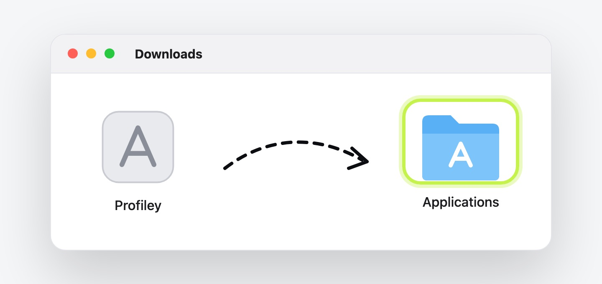
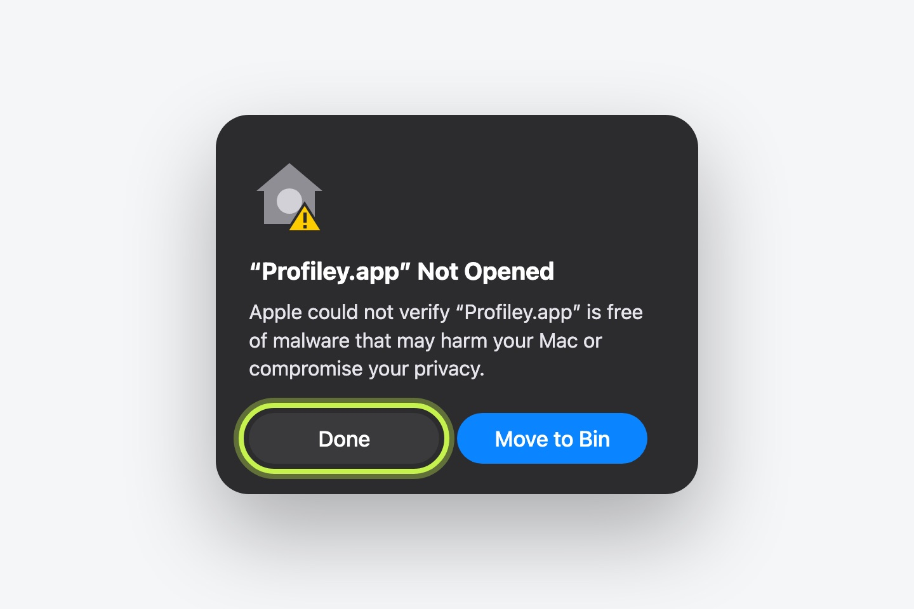
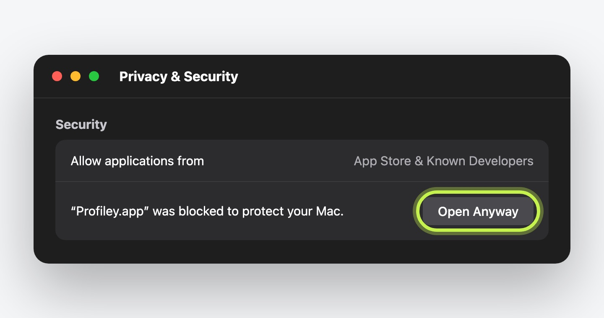
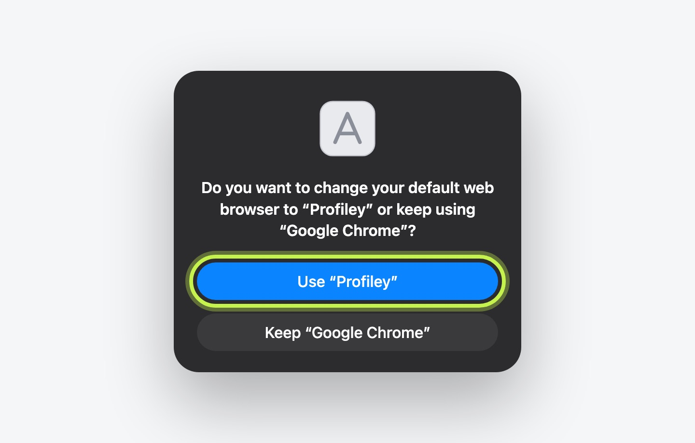

Downloading
Four steps and you’re set.
Download didn’t start? Get Profiley.zip
-
1
Move it to Applications
Open Profiley.zip from your Downloads, then drag Profiley into your Applications folder.

-
2
Open it, then press Done
Your Mac will say it “could not verify” Profiley. That’s only because it isn’t signed by Apple yet (we’re on it). Press Done, not Move to Bin.

-
3
Allow it once
Press the button, scroll down to “Profiley” was blocked, press Open Anyway and confirm with your password.
Open Privacy & Security
-
4
Say yes to “default browser”
Profiley shows your browser and its profiles. Press Looks great, and your Mac asks whether to make Profiley your default web browser. Choose Use “Profiley”. That’s the only way links from other apps can reach it. It never shows web pages itself: it hands every link straight on to your own browser (Chrome, Comet, Brave, Edge or Vivaldi), in the right profile. You can switch back any time in System Settings → Desktop & Dock → Default web browser.

That’s it. Click the test link Profiley gives you, pick a profile, and you’ll land on the feedback page in that profile.